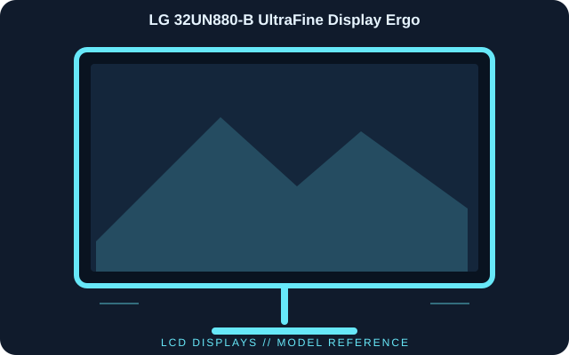

[ INDIVIDUAL COMPONENT // DISPLAYS ]
LG 32UN880-B UltraFine Display Ergo
A 31.5-inch UHD IPS monitor paired with LG’s clamp-mounted Ergo arm, USB-C laptop connection and HDR10 input support.

IDENTIFICATION: LG 32UN880-B UltraFine Display Ergo; 2020 generation. Verify the full model code, region and hardware revision on the unit label. Published specifications describe the identified configuration; its matching manual and label take precedence if revisions differ.
Published specifications
| Catalog subcategory | Lcd Displays |
|---|---|
| Exact model | LG 32UN880-B UltraFine Display Ergo |
| Panel / native resolution | 31.5-inch IPS LCD, 3840 × 2160 (16:9) |
| Refresh rate | 60 Hz |
| Typical brightness / contrast | 350 cd/m² / 1000:1 |
| Color coverage | 95% DCI-P3 (typical manufacturer rating) |
| Video inputs | USB-C with DisplayPort Alt Mode, DisplayPort 1.4 and HDMI × 2 |
| USB / audio | USB upstream/downstream hub and headphone output |
| USB-C power delivery | Up to 60 W to a connected host |
| Ergonomics | Ergo arm supports height, tilt, swivel, pivot, extension and retraction |
Compatibility & connectivity notes
USB-C single-cable operation requires host DisplayPort Alt Mode and supplies up to 60 W; larger laptops may require their own adapter. Use HDMI or DisplayPort for other sources. The distinctive clamp-style arm requires a compatible desk edge and clearance; VESA mounting is also supported. HDR10 input compatibility does not imply reference HDR mastering performance.
Preservation notes
Record the complete model suffix, serial/date code, input selection, source device, cable or adapter, tested timing and observed condition. Retain the matching regional manual and any calibration or service records with the display. Follow the manufacturer’s cleaning and service instructions; do not open CRT equipment without appropriate high-voltage training.
Manufacturer documentation & authoritative sources
- LG — 32UN880-B product specificationsManufacturer documentation and model-specific reference.
- LG — 32UN880-B manuals and softwareManufacturer documentation and model-specific reference.